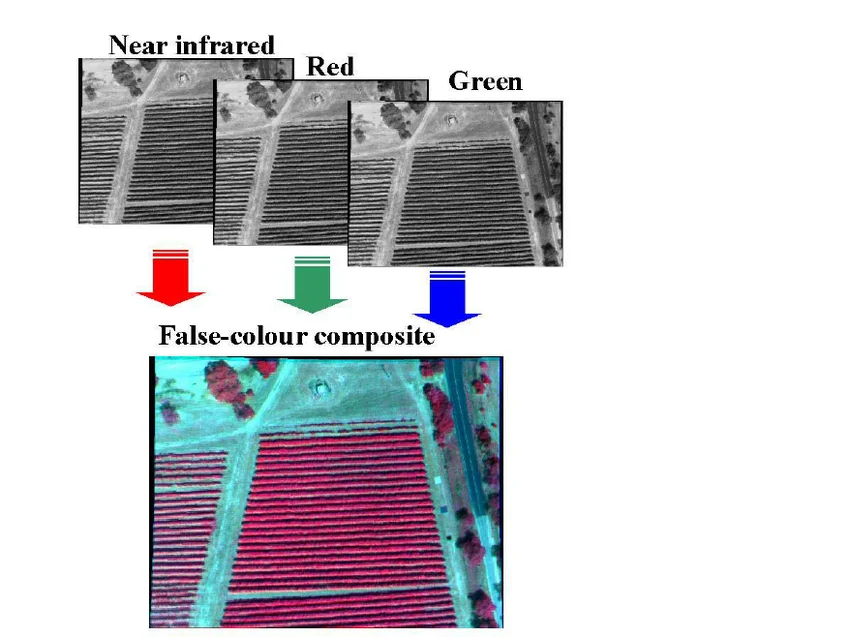
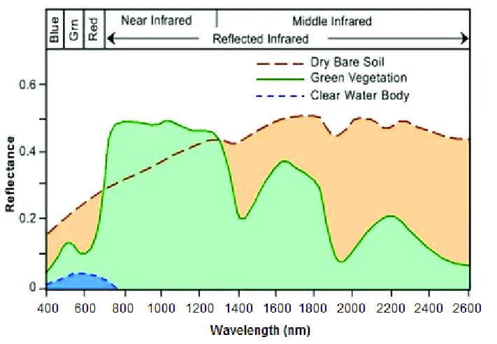
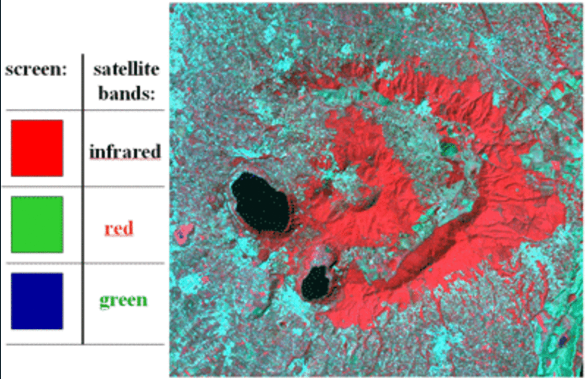
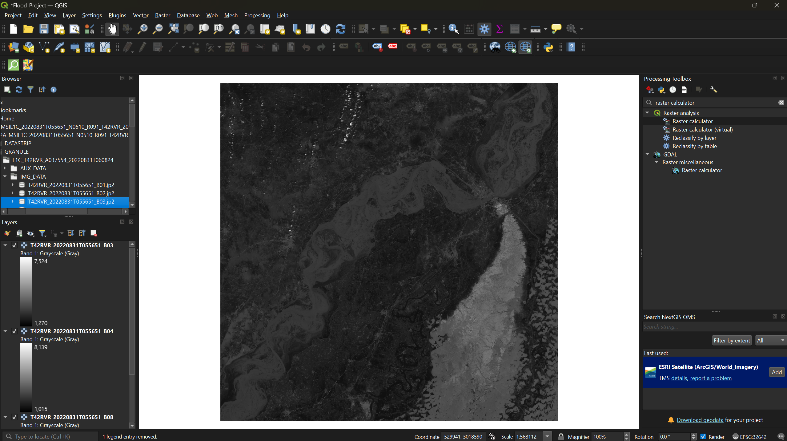
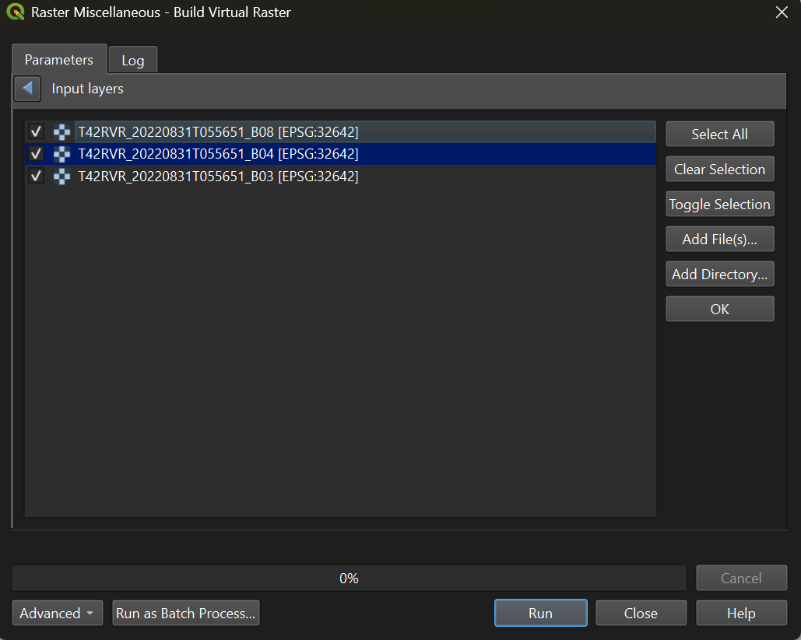
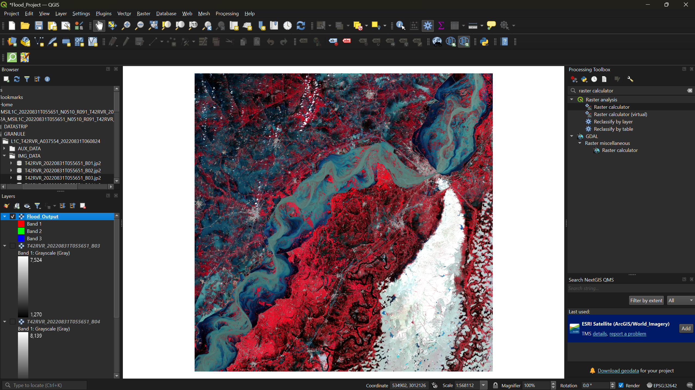
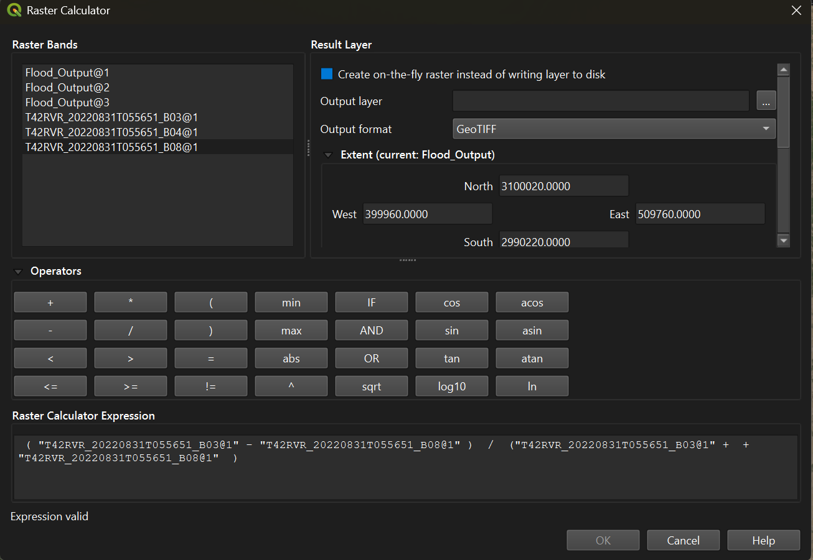
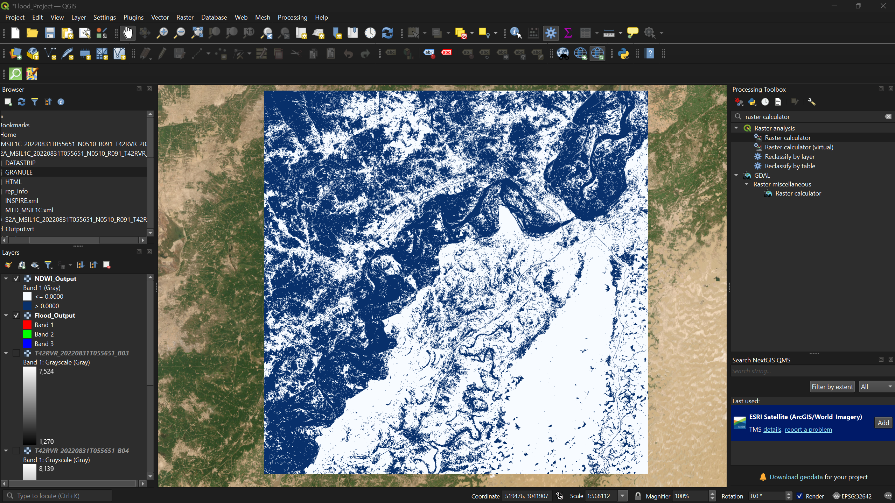

Flood Analysis with False Color Composites and NDWI
Last updated on 2026-06-25 | Edit this page
Estimated time: 45 minutes
Overview
Questions
- What is a false color composite and what does it reveal?
- How do I create a false color composite from Sentinel-2 bands in QGIS?
- What is NDWI and how does it differ from NDVI?
- How can NDWI help identify flood extent more accurately than a false color composite alone?
Objectives
- Understand how false color composites remap spectral bands to RGB channels to highlight landscape features
- Build a virtual raster in QGIS to create a false color composite from Sentinel-2 bands
- Calculate NDWI using the Raster Calculator to delineate water from non-water
- Compare FCC, NDWI, and satellite basemap imagery to assess flood extent
Introduction
In the previous episode we used NDVI to identify vegetation. In this episode we shift focus to water — specifically, how to identify the extent of flooding using two complementary techniques: False Color Composites (FCC) and the Normalized Difference Water Index (NDWI).
What Is a False Color Composite?
A true color image maps the red, green, and blue bands to their corresponding RGB screen channels, producing an image that looks like a normal photograph. A false color composite swaps one of those bands — typically replacing blue with near-infrared — so that features invisible to the human eye become visible on screen.
In a standard NRG false color composite (NIR → Red channel, Red → Green channel, Green → Blue channel):
- Vegetation appears red — because healthy vegetation strongly reflects near-infrared light, which is now displayed in the red channel
- Water appears dark blue to black — because water absorbs most near-infrared light
- Bare soil and infrastructure appear grey to white



What Is NDWI?
The Normalized Difference Water Index (NDWI) operates similarly to NDVI, but targets water rather than vegetation. It uses Sentinel-2 Bands 3 (Green) and 8 (Near-Infrared):
NDWI = (Green − NIR) / (Green + NIR)
Water absorbs near-infrared light but reflects green light, so water features produce positive NDWI values while non-water features produce negative values. This makes NDWI particularly useful for mapping flood extent, where muddy floodwater can appear ambiguous in both true and false color images.
Step 1: Set Up Your Project
- Create a folder on your desktop called Flood_Analysis.
- Open QGIS, close any pop-ups, and go to Project → Save
As. Save the project as
Flood_Projectinside your Flood_Analysis folder.
Step 2: Download and Extract the Sentinel-2 Image
Navigate to the workshop’s shared resources Google Drive. Under Day 1_Session 3a: Basic raster functions, download the ZIP file:
S2A_MSIL1C_20220831T055651_N0510_R091_T42RVR_20240719T213641.SAFE.zip-
Save the ZIP file to your Flood_Analysis folder and extract it:
- Windows: Right-click → Extract All
- Mac: Double-click the ZIP file
This image captures the Sindh province of Pakistan during the devastating 2022 floods.
Step 3: Load the Required Bands
To create both the FCC and the NDWI, we need three bands:
| Band | Wavelength | File name |
|---|---|---|
| Band 3 (Green) | ~560 nm | T42RVR_20220831T055651_B03.jp2 |
| Band 4 (Red) | ~665 nm | T42RVR_20220831T055651_B04.jp2 |
| Band 8 (NIR) | ~842 nm | T42RVR_20220831T055651_B08.jp2 |
In the Browser Panel, navigate to: Project Home → S2A_MSIL1C…SAFE → GRANULE → L1C_T42RVR_… → IMG_DATA
Drag B03, B04, and B08 into the Layers Panel.

Step 4: Create the False Color Composite
To combine three single-band rasters into one multi-band image, we use a virtual raster.
- From the menu bar, select Raster → Miscellaneous → Build Virtual Raster.
- Click the three dots next to Input Layers and
arrange the bands by dragging them into this order:
- B08 (NIR — will map to the red channel)
- B04 (Red — will map to the green channel)
- B03 (Green — will map to the blue channel)
- Click Select All, then click the back arrow in the top-left corner of the pop-up.

- Check the box Place each input file into a separate band.
- Under Virtual, click the three dots and select
Save to File. Save it as
Flood_Outputin your Flood_Analysis folder. - Click Run.
Once complete, uncheck B03, B04, and B08 in the Layers Panel to see the false color composite.

The red areas are vegetation, dark blue and black areas are water, and grey-to-white areas are bare soil and infrastructure.
Step 5: Compare Against a Satellite Basemap
Add a basemap to compare the FCC against post-flood satellite imagery.
- If you have not already installed QuickMapServices, go to Plugins → Manage and Install Plugins, search for QuickMapServices, and install it.
- Open the QMS panel (the globe-with-magnifying-glass icon in the
toolbar), search for
imagery, and add Esri Satellite (ArcGIS/World_Imagery).
Toggle the Flood_Output layer on and off to compare the
flooded landscape to post-flood imagery.
Exercise 1: Interpret the False Color Composite
- How accurate is the FCC at showing flood extent? Can you identify areas that were clearly underwater?
- What does the FCC struggle to distinguish? Look carefully at lighter blue areas — are they floodwater, or bare soil?
- What was the approximate extent of flooding in this region?
Step 6: Calculate NDWI
The FCC provides a useful overview, but it has a limitation: muddy floodwater often appears as a lighter blue-grey that is difficult to distinguish from bare soil or infrastructure. NDWI solves this by isolating water based on its spectral signature rather than relying on visual color interpretation.
- From the menu bar, select Raster → Raster Calculator.
- Enter the NDWI formula in the expression box (double-click band names to insert them):
( "T42RVR_20220831T055651_B03@1" - "T42RVR_20220831T055651_B08@1" ) / ( "T42RVR_20220831T055651_B03@1" + "T42RVR_20220831T055651_B08@1" )
- Click the three-dot button next to Output layer and
save it as
NDWI_Outputin your Flood_Analysis folder. - Click OK to run the calculation.
Step 7: Apply Symbology to the NDWI Output
- Right-click the
NDWI_Outputlayer → Properties → Symbology tab. - Change the Render type to Singleband pseudocolor.
- Set Interpolation to Discrete.
- Set the Color ramp to Blues.
- Set the Mode to Equal Interval and reduce Classes to 2.
- In the Value column, set the first value to
0— this creates a clean split between water (positive values, blue) and non-water (negative values). - Click Apply.

Step 8: Overlay NDWI on the False Color Composite
To directly compare how much water the NDWI detected versus what the FCC shows, we can make the non-water class transparent so only detected water is visible over the FCC.
- Reopen the Symbology tab for
NDWI_Output. - Right-click the color swatch for the first value (the non-water class) → Change Opacity → set to 0.
- Click Apply.
- In the Layers Panel, make sure
Flood_Output(the FCC) is turned on and positioned belowNDWI_Output.

The blue areas are pixels the NDWI identified as water. You can now see exactly where the NDWI detected flooding that may have been ambiguous in the FCC alone.
Exercise 2: Compare All Three Layers
Toggle between the NDWI overlay, the FCC, and the Esri satellite basemap to answer the following:
- Does the NDWI detect flood extent that the FCC missed? Where?
- Are there areas where the NDWI may have incorrectly classified non-water as water (false positives)?
- What are the strengths and limitations of each method? When would you use FCC versus NDWI?
- False color composites remap spectral bands to RGB channels, making vegetation (red), water (dark blue), and bare soil (grey/white) visually distinct.
- FCC is a quick visual tool but struggles with muddy or shallow floodwater that appears similar to bare soil.
- NDWI uses the ratio of green and near-infrared reflectance to isolate water features, providing a more reliable delineation of flood extent.
- Overlaying NDWI on an FCC combines the strengths of both methods — spectral precision from NDWI and spatial context from the FCC.